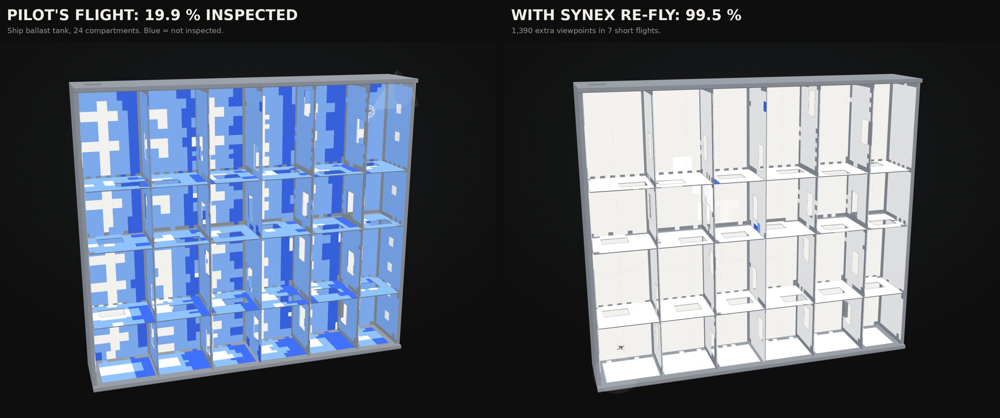
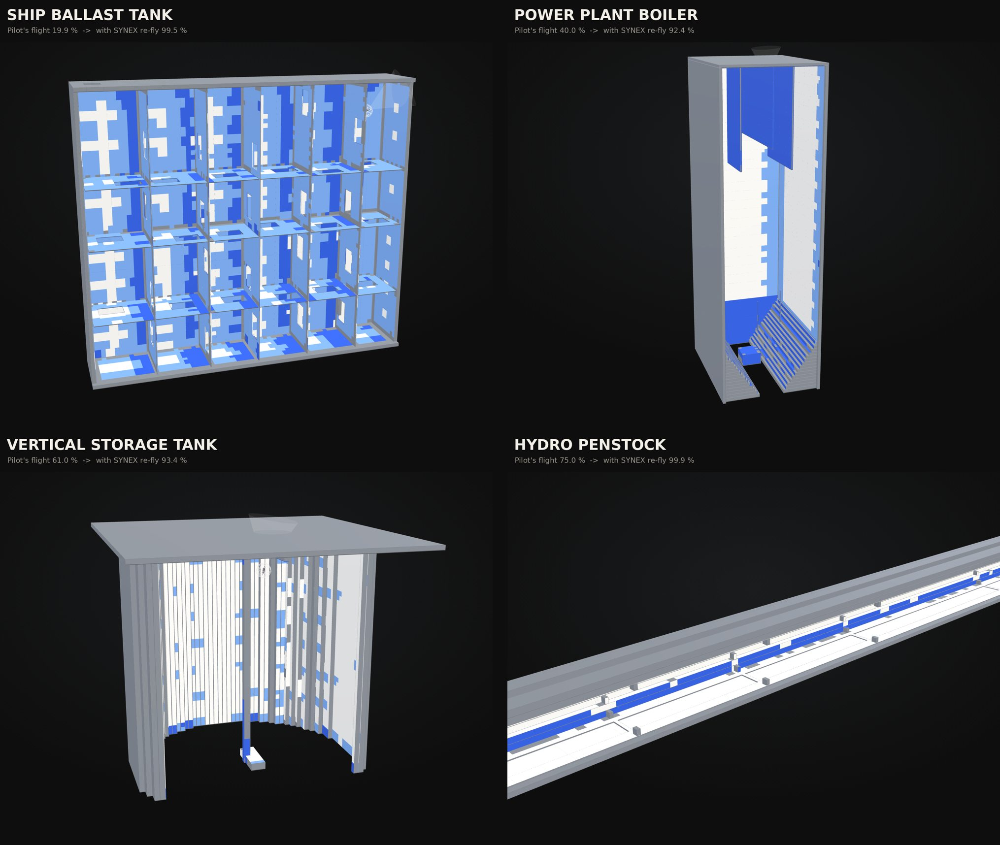
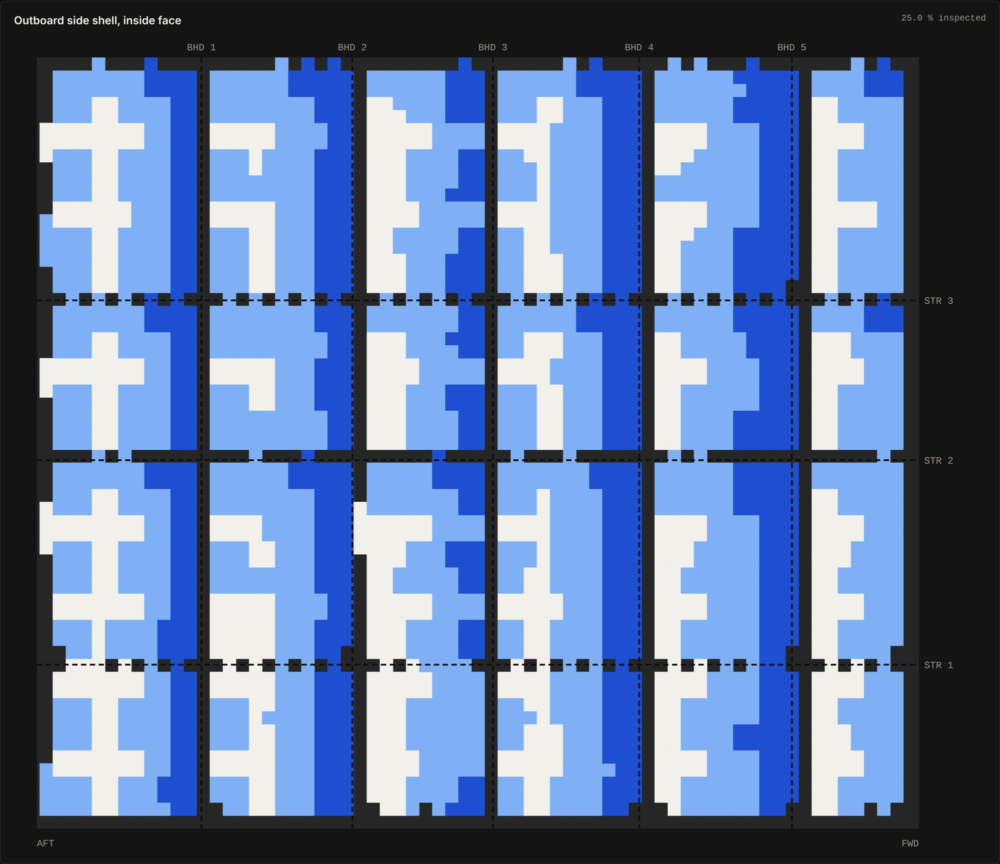
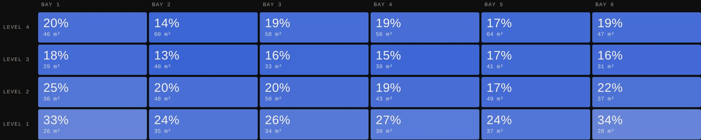

Send the point cloud and flight log your drone already records. Within 24 hours you know which walls were inspected at quality, which were only flown past, and exactly where to fly again.

After a confined-space flight you have hours of video and one open question nobody can answer from the footage.
In our sample tank, 81 % of the walls were in view at some point, but only 19.9 % sharply enough to judge the coating: pixel size, viewing angle, motion blur and light all count.
No one can tell from hours of video which square metres were never seen properly. The gap shows up later, in the report or in the field.
A missed area means another entry, another day of downtime, or a defect that stays unseen until it matters.
SYNEX works on the files your drone already produces. Nothing changes in how your team flies.

Ship ballast tanks with dozens of compartments, power plant boilers, storage tanks and hydro penstocks. The geometry comes from your point cloud; no drawing is needed.
Explore all four in the live demo →
The long walls unfolded flat, like a shell expansion drawing, with bulkheads and stringer decks marked. Every gap has a place and a size in m².

One cell per compartment with the share of its walls inspected. Every result carries software version, settings and a fingerprint of the input files, so it can be reproduced and audited.
The pilot's flight against the same flight plus the SYNEX re-fly plan. Where the result stays below 100 %, the remaining walls cannot be reached safely, and the report says so.
| Structure | Wall surface | Pilot's flight | With SYNEX re-fly | Re-fly |
|---|---|---|---|---|
| Ship wing ballast tank · 24 compartments | 1,037 m² | 19.9 % | 99.5 % | 7 flights · ~53 min |
| Power plant boiler | 1,107 m² | 40.0 % | 92.4 % | 8 flights · ~55 min |
| Vertical storage tank | 719 m² | 61.0 % | 93.4 % | 3 flights · ~19 min |
| Hydro penstock | 640 m² | 75.0 % | 99.9 % | 3 flights · ~21 min |
We are looking for 10 inspection teams to test SYNEX on real flights.
10 pilot places open
No. The geometry comes from the point cloud your drone already records.
Any drone that records a point cloud (.las, .laz, .e57, .ply and similar) and a flight log with the camera's position and direction (CSV or ROS bag). If your format is different, send a sample and we will adapt.
By default at most 1 mm of wall per pixel at the actual viewing angle, motion blur under 1.5 px and within reach of the drone's lights. All limits are adjustable to your standard.
It is used only to produce your report, never shared, and deleted when you ask. Anonymised data is fine.
Not yet. The engine is validated in simulation against independent ground truth. The free pilot is how we validate it on real flights, together with you.
Pilot partners get preferred pricing. We will agree it together after the pilot, based on what the report is worth to your team.